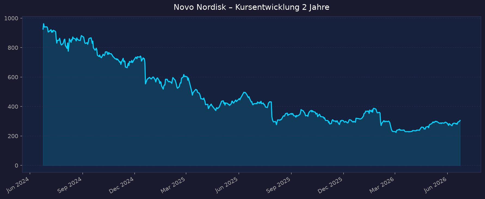
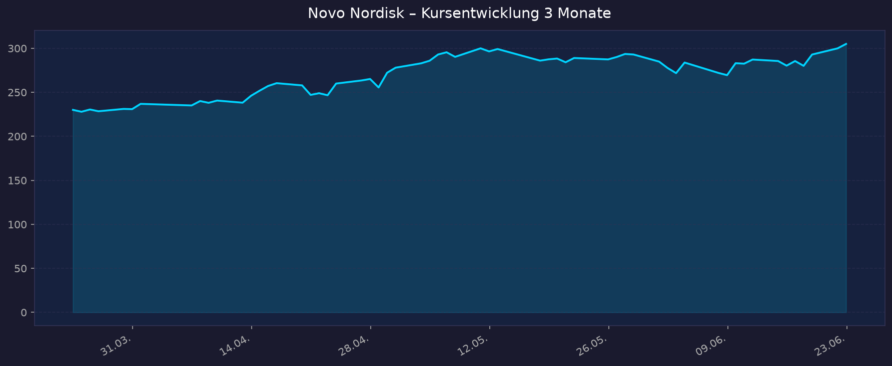

Ausgangs-These: Turnaround nach −40 % in 3 Jahren, orale Wegovy-Pille treibt die Wende, Q1 +32 % cc, KGV ~11–14 — aggressives Momentum (Trendwende, noch unbestätigt).
📈 1. Kursentwicklung
Aktueller Kurs: 305,05 DKK | Veränderung heute: +1,7 % (Vortagesschluss 299,95 DKK) US-ADR (NVO): ~43,19 USD (Stand 21.06.2026, Vortagesschluss 43,52 USD)
Chart – 2 Jahre

Chart – 3 Monate

| Zeitraum | Kurs Start | Kurs Ende | Veränderung |
|---|---|---|---|
| 2 Jahre | 925,31 DKK | 305,05 DKK | −67 % |
| 3 Monate | 230,07 DKK | 305,05 DKK | +33 % |
| 52-Wochen-Hoch | — | 464,60 DKK | — |
| 52-Wochen-Tief | — | 224,25 DKK | — |
Einordnung: Der 2-Jahres-Chart zeigt den massiven Absturz vom Allzeithoch (Mitte 2024 noch teuerstes Unternehmen Europas) auf das 52W-Tief von 224 DKK. Die letzten 3 Monate markieren eine deutliche Bodenbildung mit +33 % Erholung vom Tief — die These der Trendwende ist charttechnisch sichtbar, aber noch keine bestätigte Aufwärtstrend-Struktur. Aktueller Kurs liegt rund 34 % unter dem 52W-Hoch.
💹 2. KGV-Entwicklung (Kurs-Gewinn-Verhältnis)
Aktuelles KGV (trailing): ~11,1 (yfinance NOVO-B) bzw. ~10,3 (NVO, Stand 12.06.2026) | Forward-KGV: ~14,1
| Zeitraum | KGV | Einordnung |
|---|---|---|
| Aktuell | ~10–11 | Deutlich unter eigenem Schnitt |
| Ende 2025 | ~13,9 | 5-Jahres-Tief |
| 12-Monats-Schnitt | ~14,3 | — |
| 3-Jahres-Schnitt | ~27,3 | — |
| Peak (Juni 2024) | ~49,3 | Allzeit-Hochbewertung |
Bewertung: Historisch extrem günstig. Das KGV ist von ~49x (Mitte 2024) auf ~10–11x (heute) eingebrochen — eine Kompression von rund 75 %. Bei einem Unternehmen, das selbst in der Krise zweistellig wächst, ist das ein außergewöhnlicher Bewertungsabschlag. Der Markt preist anhaltenden Margen- und Marktanteilsverlust ein. Bei nur stabiler Geschäftsentwicklung besteht erheblicher Re-Rating-Spielraum.
💰 3. Sales Multiple (Kurs-Umsatz-Verhältnis / P/S)
Aktuelles P/S-Verhältnis: ~4,1 (yfinance, trailing 12M)
| Zeitraum | P/S Ratio | Einordnung |
|---|---|---|
| Aktuell | ~4,1 | Tief im historischen Vergleich |
| 2024 (Peak-Phase) | ~13–14 (Schätzung) | Hochbewertung |
| Historischer Schnitt (10J) | ~10 (Größenordnung) | — |
Hinweis: Exakte historische P/S-Quartalswerte über Macrotrends nicht vollständig abrufbar — die genannten Vergleichswerte sind Größenordnungen.
Trend: Stark fallend. Ein P/S von ~4 für ein hochmargiges Pharmaunternehmen (Nettomarge >30 %) mit Megatrend-Exposure ist historisch niedrig. Spiegelt dasselbe Pessimismus-Bild wie das KGV.
📊 4. Handelsvolumen (Trading Volume)
| Zeitraum | Ø Tagesvolumen | Auffälligkeiten |
|---|---|---|
| 10-Tage-Durchschnitt (NOVO-B) | ~5,0 Mio. Aktien | — |
| 3-Monats-Durchschnitt (NOVO-B) | ~5,9 Mio. Aktien | — |
| 2-Jahres-Durchschnitt | nicht verfügbar | — |
| Volumen-Peak (2J) | nicht verfügbar | wahrscheinlich um Earnings/CagriSema-Miss Feb. 2026 |
Volumentrend: Hohe Liquidität, leicht erhöhtes Volumen rund um die Q1-2026-Zahlen (06.05.2026) und das Kurstief im Frühjahr. Detaillierte historische Volumenreihen für NOVO-B nicht verfügbar.
🏦 5. Insider Trades (letzte 2 Jahre)
| Datum | Name | Funktion | Kauf/Verkauf | Anzahl Aktien | Wert |
|---|---|---|---|---|---|
| 04.02.2026 | Maziar Mike Doustdar | CEO | nicht verfügbar (Form 6-K/Meldung) | nicht verfügbar | nicht verfügbar |
| 04.02.2026 | David Moore | Executive | nicht verfügbar | nicht verfügbar | nicht verfügbar |
3-Monats-Überblick: Insider-Transaktionen wurden im Februar 2026 bei der SEC gemeldet (u. a. CEO Doustdar). Da Novo Nordisk dänisch ist und über Form 6-K/dänische Meldepflicht (nicht US-Form-4) berichtet, sind detaillierte Kauf/Verkauf-Volumina und -Werte nicht verfügbar in den US-Standardquellen (OpenInsider/Finviz). 2-Jahres-Überblick: Keine belastbaren, vollständigen Insider-Aktivitätsdaten verfügbar — als nicht verfügbar zu werten.
Quelle: SEC Edgar (Form 6-K), Nasdaq Insider Activity
🩳 6. Short-Positionen
Aktuelle Short Quote (NVO ADR): ~0,68 % des Streubesitzes (21,72 Mio. Aktien short)
| Zeitraum | Short Interest | Veränderung |
|---|---|---|
| Aktuell | ~0,68 % / 21,72 Mio. Aktien | gestiegen von 14,0 Mio. |
| vor 3 Monaten | ~14,0 Mio. Aktien | — |
| ältere Perioden | nicht verfügbar | — |
Einschätzung: Niedrig. Eine Short-Quote unter 1 % des Float ist gering und kein nennenswerter Short-Squeeze-Faktor. Der Anstieg der absoluten Short-Aktien (14 → 21,7 Mio.) zeigt zunehmende Skepsis einzelner Marktteilnehmer, bleibt aber relativ unbedeutend. (Hinweis: bezieht sich auf das US-ADR, nicht die dänische NOVO-B-Linie.)
🗞️ 7. Aktuelle Nachrichten
| Datum | Quelle | Nachricht | Relevanz |
|---|---|---|---|
| 09.06.2026 | TheStreet/Goldman | Goldman Sachs bekräftigt Neutral, Kursziel 47 USD; Wegovy-Pille wächst den Markt (meist GLP-1-Neukunden) | Hoch |
| 06.05.2026 | CNBC/Reuters | Q1 2026: Umsatz +32 % cc, EPS schlägt deutlich, Wegovy-Pille 2,26 Mrd. DKK (~2x Erwartung); Guidance angehoben | Hoch |
| 06.05.2026 | FiercePharma | CEO Doustdar: Pricing-"Sweet Spot"; Wegovy-Pille mit 355 Mio.-USD-Debütquartal | Hoch |
| Mai 2026 | CNBC | Wegovy hält 65 % aller neuen US-Verschreibungen; CEO nennt es "Turnaround-Situation" | Hoch |
| Q1 2026 | BioPharma Dive | Orale Wegovy: stärkster GLP-1-Volumen-Launch in den USA aller Zeiten, >2 Mio. kumulierte Rezepte | Hoch |
| 22.12.2025 | Novo PR/AJMC | FDA-Zulassung orale Wegovy-Pille — erstes orales GLP-1 zur Gewichtsreduktion | Hoch |
| 24.02.2026 | CNBC | CagriSema in eigener Studie Zepbound unterlegen; NDA dennoch eingereicht, Entscheidung Ende 2026 | Mittel |
| Feb. 2026 | FiercePharma | Aktie stürzt nach Sales-/Profit-Warnung für 2026; zwei Top-Manager verlassen das Unternehmen | Mittel |
| Feb. 2026 | Investing.com | Q4 2025: EPS und Umsatz über Erwartung, Aktie reagiert dennoch stark negativ (Guidance-Schock) | Mittel |
| 2026 | TIKR | Aktie −42 % in 12 Monaten — Frage nach Bounce-Back-Potenzial | Mittel |
Sentiment: Gemischt mit positiver Tendenz. Operativ liefert die orale Wegovy-Pille klar über Erwartung (zentrale These bestätigt), gleichzeitig belasten CagriSema-Enttäuschung, Management-Abgänge, US-Preisdruck und der Marktanteilsverlust an Eli Lilly. Analysten überwiegend "Buy" beim ADR (5 Buy, 0 Sell), Konsens-Kursziel jedoch nur knapp über aktuellem Niveau (NVO ~47 USD; NOVO-B ~313 DKK = ~+7 %).
📋 8. Letzte 3 Quartalsberichte
Q1 2026 (gemeldet 06.05.2026)
| Kennzahl | Ist | Erwartung | Abweichung |
|---|---|---|---|
| Umsatz (Revenue) | 96,82 Mrd. DKK (~15,2 Mrd. USD), +24 % berichtet / +32 % cc | ~ unter Ist | deutlicher Beat |
| EPS (ADR) | 6,63 USD | 5,39 USD | +23 % |
| Wegovy-Pille (oral) | 2,26 Mrd. DKK (~354 Mio. USD), ~1,3 Mio. Rezepte | ~1,16 Mrd. DKK | ~2x |
| Wegovy-Injektion | 18,2 Mrd. DKK, +12 % YoY | — | — |
| Adj. operativer Gewinn | 32,86 Mrd. DKK | — | — |
Guidance: Volljahr 2026 angehoben — adjustierter Umsatz/Gewinn erwartet zwischen −4 % und −12 % (zuvor −5 % bis −13 %). Anhebung getrieben durch starken Pillen-Start. Kursreaktion: Positiv, ADR ca. +2,7 % am Earnings-Tag.
Q4 2025 (gemeldet Februar 2026)
| Kennzahl | Ist | Erwartung | Abweichung |
|---|---|---|---|
| Umsatz (Revenue) | 12,53 Mrd. USD | 11,99 Mrd. USD | +4,5 % |
| EPS (ADR) | 1,02 USD | 0,92 USD | +10,9 % |
| FY2025 Umsatz | +10 % | — | — |
| FY2025 op. Gewinn | +6 % | — | — |
Guidance: 2026-Ausblick: adjustierter Umsatz/Gewinn −5 % bis −13 % (cc) wegen US-Preisdruck — Schock für den Markt. Kursreaktion: Stark negativ — Aktie fiel ~−14,6 % trotz Ergebnis-Beat (Guidance-Warnung dominierte).
Q3 2025 (gemeldet November 2025)
| Kennzahl | Ist | Erwartung | Abweichung |
|---|---|---|---|
| Umsatz (Revenue) | 74,98 Mrd. DKK (~11,74 Mrd. USD), +5 % berichtet / +11 % cc | ~Miss berichtet | leicht unter Erwartung |
| EPS (ADR) | 1,02 USD | — | über Erwartung lt. einer Quelle |
| Nettogewinn | ~3,13 Mrd. USD | — | Beat lt. IndexBox |
| Obesity Care (Wegovy/Saxenda) | 21,11 Mrd. DKK, +18 % | — | — |
| Wegovy einzeln | 20,35 Mrd. DKK, +23 % | — | Wachstum verlangsamt (Compounding) |
Guidance: FY-Wachstum 8–11 % cc; 9-Monats-Wachstum 15 %. Kursreaktion: Gemischt — Umsatz-/Ergebnis-Miss bei Berichtswährung, US-Hürden (Compounding, Lilly-Wettbewerb) belasteten.
Free Cashflow je Quartal: nicht durchgängig verfügbar — als nicht verfügbar markiert.
🌍 9. Marktkontext & Wettbewerb
(via market-research Skill)
Markt / Branche: GLP-1 / Adipositas-Medikamente. TAM-Schätzungen variieren stark: Konsens-Range Gesamt-GLP-1 ~95–190 Mrd. USD bis 2030/2035 (Goldman ~95 Mrd. konservativ; Morgan Stanley ~190 Mrd. bis 2035). US-Patienten auf GLP-1: ~10 Mio. (2025) → erwartete ~25 Mio. bis 2030.
| Wettbewerber | Stärke | Schwäche |
|---|---|---|
| Eli Lilly (Marktführer) | Tirzepatid (Mounjaro/Zepbound) in Head-to-Head überlegen; ~57 % GLP-1-Anteil; orale Pille Foundayo/Orforglipron seit 01.04.2026 zugelassen; breite Pipeline (Retatrutid) | Orale Foundayo nur ~12 % Gewichtsverlust (schwächer als orale Wegovy ~17 %); hohe Bewertung |
| Amgen | MariTide (monatliche/seltene Injektion), differenziertes Wirkprinzip | Späterer Markteintritt; finale Daten ausstehend |
| Pfizer | Finanzkraft, globale Vertriebsstruktur (Metsera-Deal) | Mehrere Rückschläge oral; kein zugelassenes Adipositas-Asset |
| Roche | Tiefe Taschen, Diagnostik-Synergien (Zealand/Petrelintid) | Frühe Entwicklungsphase, kein Produkt am Markt |
| Viking Therapeutics | VK2735 (dual GLP-1/GIP) mit vielversprechenden Daten, oral+s.c. | Kleine Biotech ohne eigene Produktion; Übernahmekandidat |
Branchentrends:
- Wechsel Injektion → Pille ("Mass Adoption" 2026): Orale GLP-1 sind der Volumenhebel; orale Wegovy mit injektions-vergleichbarer Wirkung (~17 %) ist Novos zentrale Trumpfkarte.
- Nächste Wirkstoffgeneration (Multi-Pathway): Novos CagriSema (GLP-1/Amylin, NDA eingereicht, ~23 % in Studie, aber Zepbound unterlegen) und Amycretin (Ph. III) gegen Lillys Tirzepatid.
- Preisdruck & politische Eingriffe: Trump-Administration drückt Listenpreise; Novo senkte Preise — niedrigerer Preis/Einheit bei steigendem Volumen verändert Margenstruktur.
Marktposition: Vom Marktführer zum Verfolger. Novo fiel von ~69 % GLP-1-Anteil (Q2 2024) auf eine Position hinter Eli Lilly (~57 % Lilly in Q2 2025), das Novo auch außerhalb der USA überholt hat. Prognose-Szenario 2031: Lilly ~44 % vs. Novo ~36 %. Die orale Wegovy-Pille (65 % der neuen US-Verschreibungen der Marke) ist das stärkste Gegenargument.
Risiken aus dem Marktumfeld:
- Wettbewerbsdruck Eli Lilly (überlegenes Tirzepatid) — akut/laufend
- Medicare-IRA-Preisverhandlung ab 2027 (Ozempic 274 USD vs. vorher 959; Wegovy hohe Dosen 385 USD/Monat)
- Patentablauf Semaglutid: USA ~2032, aber Indien & China bereits 2026
- Compounding/Generika (Dr. Reddy's Generikum in Kanada/Indien)
- Politischer Preisdruck (direkte Trump-Intervention)
- Pipeline-Ausführungsrisiko (CagriSema-Zulassung, Amycretin Ph. III)
📝 Gesamteinschätzung
Stärken:
- Orale Wegovy-Pille bestätigt die These voll: stärkster GLP-1-Volumen-Launch der USA aller Zeiten, ~2x Analystenerwartung, 65 % der neuen Marken-Verschreibungen, wächst den Gesamtmarkt (GLP-1-Neukunden)
- Extrem günstige Bewertung: KGV ~10–11 vs. 3-Jahres-Schnitt ~27, P/S ~4 — enormer Re-Rating-Spielraum
- Q1 2026: +32 % cc Umsatz, EPS-Beat +23 %, Guidance angehoben
- Hochmargiges Geschäft (Nettomarge >30 %), Megatrend Adipositas mit jahrelangem Strukturwachstum
- Solide Pipeline-Optionen (CagriSema, Amycretin) als zusätzliche Hebel
Risiken:
- Marktführerschaft an Eli Lilly verloren (überlegenes Tirzepatid) — strukturell, nicht nur zyklisch
- US-Preisdruck + IRA-Preisverhandlungen ab 2027 drücken Margen; 2026-Guidance impliziert noch Schrumpfung
- CagriSema in eigener Studie Zepbound unterlegen — Pipeline-These angekratzt
- Management-Instabilität (Top-Abgänge, neuer CEO im Turnaround)
- Patentablauf Semaglutid 2032 (USA), bereits 2026 in China/Indien → Generika-Erosion
- Analysten-Konsens-Kursziel nur ~+7 % — die "leichte" Erholung ist teils eingepreist
Fazit: Novo Nordisk ist ein klassischer, früher Turnaround-Kandidat: Die zentrale These (orale Wegovy-Pille) ist operativ bestätigt und übertrifft Erwartungen, während die Bewertung historisch günstig ist. Dem stehen reale strukturelle Belastungen gegenüber — verlorene Marktführerschaft an Eli Lilly, US-Preisdruck und eine 2026-Guidance, die noch Schrumpfung vorsieht. Es ist ein aggressives Momentum-/Value-Investment mit hohem Chance-Risiko-Profil; die Trendwende ist sichtbar, aber noch nicht durch nachhaltiges Umsatzwachstum bestätigt.
🎯 Ranking-Einordnung
| Kriterium | Gewicht | Punkte (1–10) | Begründung |
|---|---|---|---|
| Umsatz-/EPS-Wachstum | 25 % | 6 | Q1 +32 % cc / EPS-Beat stark, aber FY-Guidance impliziert noch Schrumpfung (−4 bis −12 %); Wachstum nicht nachhaltig bestätigt |
| Bewertungsraum | 25 % | 9 | KGV ~10–11 vs. 3J-Schnitt ~27, P/S ~4 — außergewöhnlicher Re-Rating-Spielraum |
| Megatrend-Stärke | 20 % | 9 | Adipositas/GLP-1 ist einer der stärksten Pharma-Megatrends, TAM ~95–190 Mrd. USD |
| Katalysatoren | 15 % | 7 | Orale Wegovy-Ramp, CagriSema-Entscheidung Ende 2026, Amycretin — klare, aber teils ambivalente Trigger |
| Risikoprofil | 15 % | 4 | Lilly-Wettbewerb, Preisdruck/IRA, CagriSema-Miss, Management-Abgänge, Patentablauf — erhöht |
Gewichteter Gesamt-Score: 0,25×6 + 0,25×9 + 0,20×9 + 0,15×7 + 0,15×4 = 1,50 + 2,25 + 1,80 + 1,05 + 0,60 = 7,2 / 10
Szenarien 5 Jahre (Horizont 2031) — Basis NOVO-B 305 DKK
| Szenario | Annahme | Kursziel 2031 | Potenzial |
|---|---|---|---|
| 🐻 Bär | Lilly dominiert weiter, Preisdruck/IRA + Patentablauf erodieren Marge, orale Wegovy verpufft als Markttreiber | ~210 DKK | −31 % |
| 📊 Base | Stabilisierung des Marktanteils auf ~35 %, orale Wegovy trägt Wachstum, moderates Re-Rating Richtung KGV ~16 | ~480 DKK | +57 % |
| 🚀 Bull | Voller Turnaround, orale Wegovy + CagriSema/Amycretin liefern, Re-Rating Richtung KGV ~22, Marktwachstum am oberen Rand | ~720 DKK | +136 % |
Szenario-Werte sind eigene, transparent hergeleitete Schätzungen auf Basis Gewinnentwicklung × plausibler KGV-Bandbreite — keine Analystenkonsens-Ziele (12-Monats-Konsens liegt bei ~313 DKK / +7 %).
00_Momentum-Aktien USA-EU-Asien – 5-Jahres-Shortlist 2026-06-23
Datenquellen: Yahoo Finance · yfinance · Macrotrends · public.com · Investing.com · CNBC · Reuters · FiercePharma · BioPharma Dive · Goldman Sachs · Morgan Stanley · MarketBeat · Finviz · SEC Edgar · Nasdaq · Novo Nordisk IR Keine Anlageberatung — rein informative Auswertung öffentlicher Daten. Investitionsentscheidungen treffen Sie eigenverantwortlich.